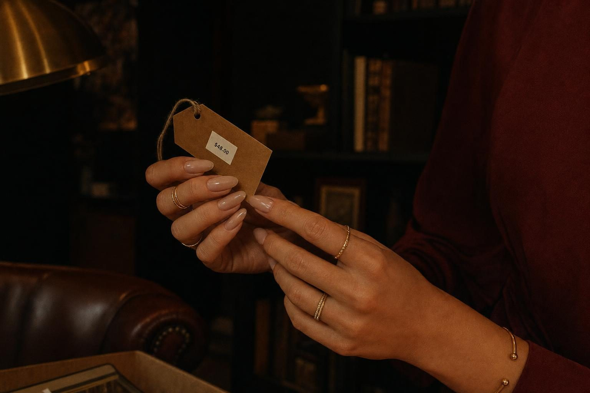
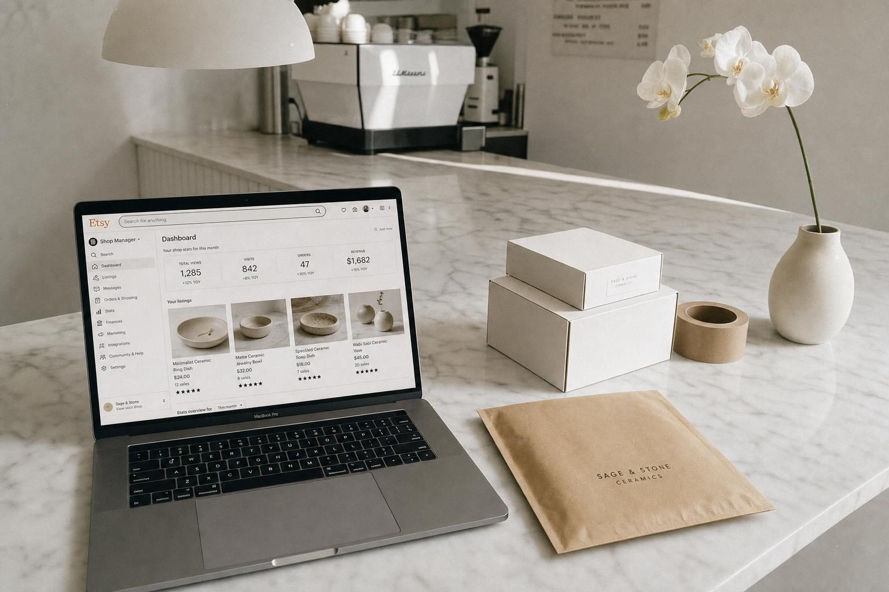
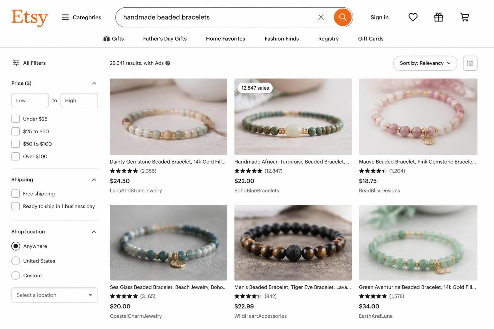
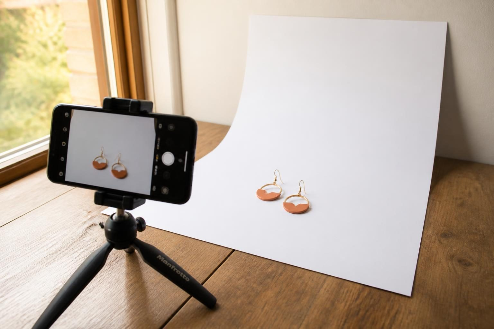
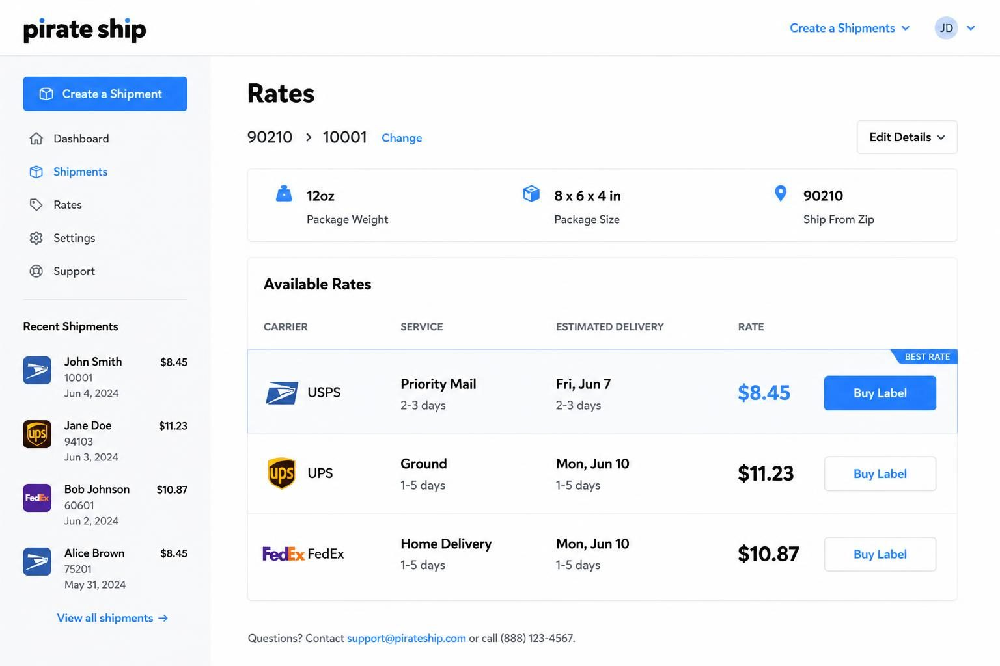
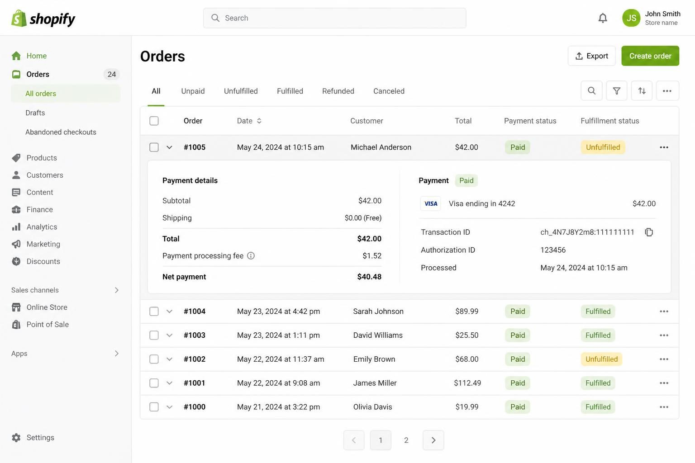

HOW TO START SELLING ONLINE: THE PRACTICAL GUIDE FOR FIRST-TIME SELLERS


The fastest way to start selling online is to pick one platform that matches your product type, list your first 10 items with clear photos and honest descriptions, and make your first sale to someone you already know - not a stranger who found you through search. That sequence matters more than choosing the perfect platform or building a beautiful website.
Most people get stuck before they start because they think they need everything in place first. A custom website. Professional product photography. An LLC. A logo. A full inventory. They spend months researching platforms, comparing payment processors, and watching tutorials about shipping labels - and they never actually sell anything.
Here is what actually happens when you start selling online: your first customers are people in your existing network. Friends. Family. That person from your old job who comments on everything you post. Your first 10 sales will come from people who already know you, not strangers finding you through Etsy search or Google ads.
This is not embarrassing. This is how you get your first reviews, figure out your shipping process, and learn what questions people actually ask before buying. Only after that foundation exists does it make sense to think about driving traffic from strangers.
The businesses that succeed online are not the ones with the best tech stack or the prettiest branding - they are the ones that started selling before they felt ready.
Let me show you exactly how to do that.
THE PRODUCT DECISION THAT DETERMINES EVERYTHING ELSE
Before you choose a platform, before you think about shipping, before you design anything - you need to know what you are selling. And "something I am passionate about" is not a product strategy.
Your product needs to pass three tests:
Can you ship it affordably?
A 2-pound candle in a glass jar costs significantly more to ship than a 2-ounce pair of earrings in a padded envelope. Dimensional weight (the size of the box) often matters more than actual weight. If your product requires special packaging to prevent damage, factor that cost into your margins before you commit.
Can you price it at 3-4x your landed cost?
Your landed cost includes the product itself, packaging materials, platform fees, and payment processing. If a product costs you $8 to make and ship, you need to sell it for $24-32 to have a sustainable business. Anything less and you are working for free after marketing costs.
Are people actually searching for this?
Go to Etsy and search for your product idea. If you see dozens of sellers with hundreds or thousands of sales, that is good news - it means demand exists. No competition usually means no demand. You want a market with proven buyers, not an empty space.
Here is what most new sellers get wrong: they fall in love with a product idea before checking whether it can actually make money. I have seen people invest thousands in inventory for handmade items that cost $15 to make and can only sell for $20 because of market pricing. That is a hobby, not a business.
The sweet spot is a product you can source or create consistently, ship without drama, and price with room to breathe.

WHERE TO SELL: MATCHING YOUR PLATFORM TO YOUR PRODUCT
You do not need a website to start selling online. In fact, for most first-time sellers, starting with a marketplace platform makes more sense than building your own store.
Etsy works best for handmade items, vintage goods (20+ years old), and creative supplies. The built-in search traffic means buyers are already looking for products like yours. You pay 20 cents per listing plus 6.5% transaction fees plus payment processing - roughly 10-12% total per sale. The advantage is that Etsy brings you customers. The disadvantage is that you are competing directly with thousands of other sellers on the same page.
Amazon works best for products with existing search demand - things people already know they want. If someone types "yoga mat" into Amazon, they are ready to buy. The fees are higher (roughly 15% plus FBA costs if you use their fulfillment), but the traffic volume is massive. This platform rewards products that can compete on price and reviews.
Facebook Marketplace works best for local sales, vintage items, and testing whether something sells before investing in shipping infrastructure. Zero fees for local pickup sales. The audience skews toward deal-hunters, so premium pricing is harder here.
Shopify works best when you want full control over your brand and customer experience. You pay $39/month plus payment processing (2.9% + 30 cents with Shopify Payments). The catch: you drive your own traffic. No one finds your Shopify store by accident. This platform makes sense after you have validated demand elsewhere.
If you are selling handmade jewelry, start on Etsy. If you are reselling vintage items, start on Facebook Marketplace or eBay. If you have a product with broad appeal and can compete on price, consider Amazon. If you already have an audience on social media, Instagram or Facebook Shops let you sell directly to people who already follow you.
Pick one platform. Get your first 50 sales. Then consider adding a second channel.
Multi-channel selling sounds smart in theory but creates operational chaos in practice. Inventory sync issues, different shipping label workflows, platform-specific customer service expectations. Master one channel first.
THE PHOTOS THAT MAKE OR BREAK YOUR LISTINGS
Online buyers cannot touch your product. They cannot feel the weight of it, see how the light catches the surface, or check whether the color matches their existing decor. Your photos do all of that work.
You do not need expensive equipment. A smartphone made in the last five years, natural window light, and a clean white background (poster board from the dollar store works fine) will produce better photos than a professional camera with bad lighting.
Here is what every listing needs:
- One clear product-only shot on a plain background - this is usually your main image
- One scale reference - the product next to something familiar so buyers understand the size
- Two to three detail shots - closeups of texture, stitching, clasps, labels, whatever makes your product quality visible
- One lifestyle or context shot - the product being used or displayed in a real setting
The lifestyle shot matters more than most new sellers realize. A candle sitting on a white background looks like every other candle. A candle on a wooden tray next to a book and a cozy blanket tells a story. Buyers are purchasing the feeling, not just the object.
Common photo mistakes that cost sales:
Photos taken in dim indoor lighting with yellow cast. Fix: move to a window during daylight hours.
Busy backgrounds that distract from the product. Fix: a plain wall or large piece of poster board behind and beneath the product.
Only one angle. Buyers want to see the front, back, side, and any important details. One photo is never enough.
Inconsistent style across listings. If your first three products have bright white backgrounds and your fourth has a dark moody background, your shop looks disorganized.

PRICING THAT ACTUALLY LEAVES ROOM FOR PROFIT
Most new sellers underprice their products because they only think about the cost to make them. Then they wonder why they are working constantly and not making money.
Here is the math that actually matters:
Product cost: What you paid for materials or wholesale inventory.
Packaging cost: Boxes, mailers, tissue paper, thank you cards, tape, labels. These add up to $1-3 per order for most products.
Platform fees: Etsy takes roughly 10-12% total. Amazon takes 15% plus FBA if applicable. Shopify takes payment processing only (2.9% + 30 cents) but you pay the monthly subscription.
Payment processing: Every platform charges this. Budget 3% as a baseline.
Shipping cost (if you offer free shipping): Free shipping is not free - you are building it into your price. Calculate what it actually costs to ship to your most common destinations.
If a product costs you $8 to make, $2 to package, and $5 to ship, your landed cost is $15. Add 10% for platform fees on a $30 sale price and you are at $18 in costs. Your profit on a $30 sale is $12 - before you account for your time, marketing costs, or returns.
The 3-4x rule exists for a reason. If your landed cost is $15, you need to sell at $45-60 to have a sustainable business with room for marketing and occasional discounts.
What if your market will not pay that price?
Then you have a margin problem, not a pricing problem. You either need to reduce your costs (cheaper materials, more efficient production, better shipping rates) or find a different product. Selling at low margins because "everyone else prices this way" is a fast path to burnout.
SHIPPING STRATEGY: WHERE MOST NEW SELLERS LOSE MONEY
Shipping is boring to think about and expensive to get wrong. Here is what you need to know before your first sale.
Dimensional weight matters more than actual weight. Carriers charge based on the larger of actual weight or dimensional weight (length x width x height divided by a factor, usually 139 for domestic). A lightweight but bulky product in a big box can cost more to ship than a heavier product in a small flat envelope.
Free shipping is built into your price, not absorbed. If your competitors offer free shipping, buyers expect it. Calculate your average shipping cost and add it to your product price. A $25 product with $5 shipping converts worse than a $30 product with free shipping, even though the total is the same.
Rate shopping saves real money. USPS is usually cheapest for lightweight items under a pound. UPS and FedEx often win for heavier packages or longer zones. Pirate Ship and other shipping software let you compare rates and print labels at commercial pricing without monthly fees.
Flat rate boxes can be your friend or your enemy. USPS Priority Mail flat rate boxes are great if your product is heavy and fits the box dimensions. They are terrible if your product is lightweight - you will overpay significantly. Do the math both ways before committing to a packaging strategy.
Your first shipping mistake will be expensive. You will underestimate packaging time, forget to factor in packaging costs, or ship something that arrives damaged. Build a small buffer into your pricing for learning curve losses.
If you sell products that need to ship, read through my comparison of Shopify vs Etsy for how shipping integrations differ between platforms - it affects your workflow more than you might expect.

THE LEGAL BASICS (AND WHAT YOU CAN SKIP FOR NOW)
You do not need an LLC to start selling online. You do not need a business license in most cases for your first few sales. You do not need to register a trademark.
Here is what you actually need:
A way to separate business money from personal money. Open a free business checking account (most banks offer them with no monthly fee for low balances). Use it for all business income and expenses. This makes taxes dramatically easier and protects you if you ever get audited.
Basic sales tax compliance. Good news: most marketplace platforms (Etsy, Amazon, eBay) now collect and remit sales tax automatically as marketplace facilitators. If you sell through Shopify or your own website, you will need to enable sales tax collection based on where you have nexus (usually your home state at minimum).
Record keeping from day one. Track every sale, every expense, every shipping cost. A simple spreadsheet works. So does free software like Wave. The IRS considers you a business if you are trying to make a profit, regardless of whether you have registered anything officially.
An EIN (Employer Identification Number). Free from the IRS website, takes 10 minutes. You do not strictly need this as a sole proprietor, but it lets you open business bank accounts without using your Social Security Number everywhere.
What you can skip for now:
- LLC formation (consider this once you are making consistent sales and have assets to protect)
- Trademark registration (consider this once you have a brand worth protecting)
- Business licenses (check your city and state requirements, but most online sellers operating from home do not need these initially)
- DBA (Doing Business As) registration (only needed if you want to operate under a name different from your legal name)
The goal is to start selling legally without overcomplicating your setup. You can add complexity as your business grows.
YOUR FIRST 10 SALES: THE LAUNCH THAT ACTUALLY WORKS
Your first customers will not find you through search. They will not stumble across you through Instagram hashtags. They will not click an ad.
Your first customers already know you.
This is not a failure of your marketing strategy. This is how every successful online business starts. Your existing network - friends, family, former coworkers, people who follow you on social media - are the fastest path to your first reviews, your first feedback, and your first proof that your product actually sells.
Here is the launch sequence that works:
Week 1: Pre-launch announcement
Post on your personal social media that you are launching an online shop. Share what you are selling and why. Ask people to follow your business account or join your email list for launch updates. Do not be shy about this - the people who care about you want to support you.
Week 2: Soft launch to inner circle
Before you go public, offer your product to 5-10 people in your close network at a small discount in exchange for honest feedback and a review. These early sales let you test your shipping process, refine your packaging, and catch any product issues before strangers experience them.
Week 3: Public launch
Open your shop officially. Post about it. Email your list. Ask your early customers to leave reviews. Your first reviews are worth more than your first dollars - they build the social proof that converts future strangers into buyers.
Weeks 4-8: Consistent visibility
Post regularly about your products, your process, behind-the-scenes content, and customer photos (with permission). Every piece of content is a chance for someone new to find you.
The math of early sales:
If you have 500 Instagram followers and 3% of them buy something, that is 15 sales. If 200 people are on your email list and 5% convert, that is 10 more sales. Your first 25 sales might come entirely from people who already know your name. After that, reviews and SEO start working for you.
For service providers who want to pair their products with a professional online presence, the business template bundles at Switzertemplates include everything you need to look credible from day one - without spending weeks on design.
PAYMENT PROCESSING: THE FEES YOU NEED TO KNOW
Every time someone pays you online, a percentage disappears into payment processing. This is unavoidable. But the rates vary enough that understanding them matters for your pricing.
Platform-specific payment processing:
- Shopify Payments: 2.9% + 30 cents per transaction on the basic plan
- PayPal: 3.49% + 49 cents for standard transactions (less with higher volume)
- Stripe: 2.9% + 30 cents per transaction
- Square: 2.9% + 30 cents online
- Etsy Payments: 3% + 25 cents (on top of Etsy's transaction fees)
What this means for a $25 sale:
On Shopify with Shopify Payments: you keep $24.18 after payment processing.
On Etsy: you keep roughly $21.50 after transaction fees, payment processing, and listing fees.
On PayPal direct: you keep $23.64 after payment processing.
The difference between $21.50 and $24.18 does not sound like much, but multiply it by 100 sales per month and you are looking at $268 in fees that go to Etsy versus $182 that go to Shopify. Over a year, that is over $1,000 in additional platform fees.
This is not an argument against Etsy. Etsy brings you traffic that Shopify does not. The question is whether that traffic is worth the extra cost for your specific product and audience.
Chargebacks and disputes:
When a customer disputes a charge with their bank, you lose the sale amount plus a chargeback fee ($15-25 typically). Having clear product descriptions, realistic photos, and responsive customer service prevents most disputes before they start.

SCALING BEYOND YOUR FIRST PLATFORM
Once you have 50-100 sales on your first platform and your systems are running smoothly, you might consider expanding to additional sales channels.
When it makes sense to add a second platform:
You have consistent inventory (you know how much you can produce or source each month).
Your shipping process is systemized (you are not reinventing the workflow with every order).
You have capacity for more orders without sacrificing quality or turnaround time.
You have hit a ceiling on your current platform's traffic or audience.
When it does not make sense yet:
You are still figuring out your product mix.
You regularly run out of stock.
Customer service issues are eating your time.
You have not turned a profit yet.
The multi-channel inventory problem:
If you list the same product on Etsy and Shopify, you need a way to keep inventory synced. Selling your last unit on Etsy while someone orders it on Shopify creates a customer service nightmare. Solutions include inventory management software (like Sellbrite or Ecomdash), manually adjusting stock counts daily, or holding separate inventory for each channel (simplest but ties up more capital).
Your own website as a long-term play:
A platform like Etsy or Amazon brings you customers you would not find otherwise. But they also control your relationship with those customers. You cannot email them directly. You cannot build a real brand presence. You cannot control the shopping experience.
Eventually, most serious sellers want their own website - not to replace marketplaces, but to own their brand, build an email list, and have a home base that does not depend on any platform's algorithm.
If you are exploring your own store, my guide to setting up a Shopify store walks through the full process. And if you want to skip the technical part entirely, I also design premade Shopify themes for sellers who want a professional store without building from scratch.
THE MISTAKES THAT COST NEW SELLERS THE MOST
After watching thousands of people start selling online, the same mistakes show up again and again. Here is what to avoid:
Mistake 1: Waiting until everything is perfect.
Your first listing will not be your best listing. Your first photos will not be your best photos. Your first product description will miss something important that a customer question reveals. This is normal. Launch with good enough and improve as you learn.
Mistake 2: Underpricing because you are scared no one will buy.
Low prices do not build trust - they raise suspicion. Why is this handmade jewelry only $12 when similar items are $35? There must be something wrong with it. Price based on your costs and your market, not your fear.
Mistake 3: Ignoring shipping costs until after you set prices.
I have seen sellers realize their "profit" disappears entirely once they factor in packaging and shipping to specific zones. Do the shipping math first, then set your price.
Mistake 4: Trying to sell to everyone.
"Women aged 18-65 who like nice things" is not a target customer. "Busy moms looking for meaningful birthday gifts for their kids' teachers" is. The narrower your focus, the easier it is to create products, write descriptions, and find your people.
Mistake 5: Expecting strangers to find you immediately.
Organic search traffic takes months to build on any platform. Paid ads require testing budgets. Viral social media posts are unpredictable. Your first 30 sales should come from people you actively reach out to, not passive traffic.
Mistake 6: Adding multiple sales channels too fast.
One platform, mastered, beats three platforms done poorly. Get profitable on one before adding complexity.
FREQUENTLY ASKED QUESTIONS
Do I need an LLC to sell products online?
No. You can start selling as a sole proprietor with no formal business registration. An LLC provides liability protection (separating your personal assets from business debts) but costs money to form and maintain. Most sellers wait until they are making consistent revenue before incorporating. Start with a separate business bank account and proper record keeping - those matter more early on.
What is the best platform to start selling on as a beginner?
It depends on what you are selling. Etsy works best for handmade, vintage, and creative supplies - the built-in traffic means buyers find you. Facebook Marketplace works for local sales and testing demand with zero fees. Amazon works if your product has existing search demand and can compete on price. Shopify works when you already have an audience and want full brand control. Most beginners should start on a marketplace platform where traffic already exists.
What can I sell to make $1,000 per month?
Products with at least $15-20 profit margin per sale mean you need 50-70 sales monthly to hit $1,000 in profit. Higher-margin items (handmade goods, print-on-demand, digital products) require fewer sales. Lower-margin items (reselling, wholesale products) require more volume. The math matters more than the specific product - choose something you can source or create consistently at a margin that makes the numbers work.
How do I actually get my first sale?
Your first sale will almost always come from someone who already knows you. Announce your launch on personal social media. Email friends and family. Offer early supporters a small discount in exchange for honest reviews. Do not wait for strangers to find you through search - that takes months. Use your existing network to validate demand and build social proof first.
Can I make $1,000 a month selling on Amazon?
Yes, but Amazon's fee structure (roughly 15% plus FBA costs) means your margins are tighter than other platforms. You need products with strong existing search demand, competitive pricing, and enough volume to offset the fees. Many successful Amazon sellers focus on wholesale or private label products rather than handmade items. The platform rewards sellers who can compete on price and maintain high review ratings.
What is the 3-3-3 rule in sales?
The 3-3-3 rule suggests following up with potential customers 3 times across 3 different channels over 3 weeks before considering them unresponsive. For online product sellers, this applies more to B2B or wholesale outreach than individual customer sales. For direct-to-consumer, focus instead on abandoned cart emails (one automated follow-up is often enough to recover 5-10% of abandoned checkouts).
YOUR NEXT STEP (AND IT IS SMALLER THAN YOU THINK)
Starting to sell online does not require a perfect website, professional photography, or thousands of followers. It requires a product someone wants to buy, a place to list it, and the willingness to ask people you know to be your first customers.
Here is what you can do today:
Write down one product you could list for sale this week. Check whether people are already buying it on Etsy or Amazon. Calculate whether the numbers work at a price the market will pay. If yes, take five photos with your phone and write a description that answers every question a buyer might ask.
Your first sale is closer than you think - but only if you actually list something.
The sellers who succeed are not the ones with the best tech setup or the most polished branding. They are the ones who started before they felt ready, learned from their first 10 customers, and improved as they went.
If you are building a business that needs an online presence beyond just product listings, the business template bundles at Switzertemplates give you a professional website, branding kit, and landing page ready to customize - so you can skip the design phase and focus on what you actually sell.
Now go list your first product. The perfect moment does not exist. This one does.
Let me know in the comments below if you want me to cover any branding or marketing topics in more depth, and I'll make sure to create a blog post about it in the future.